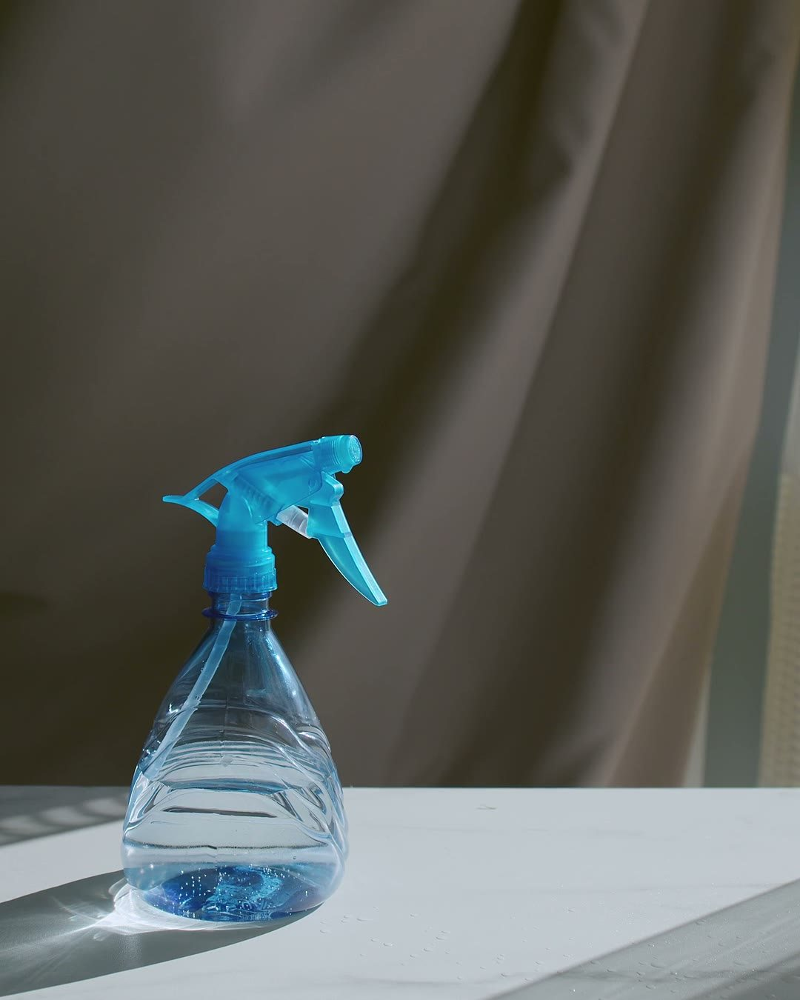
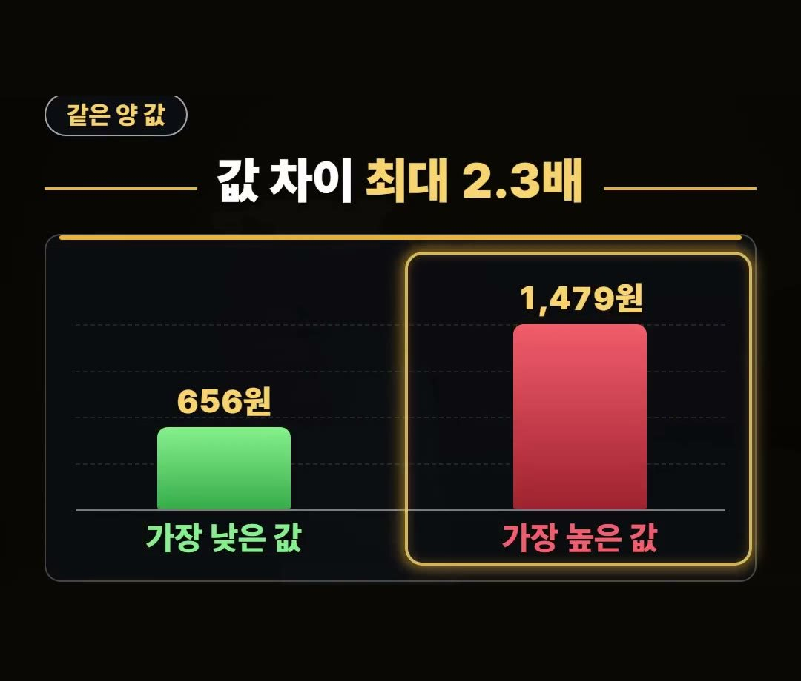
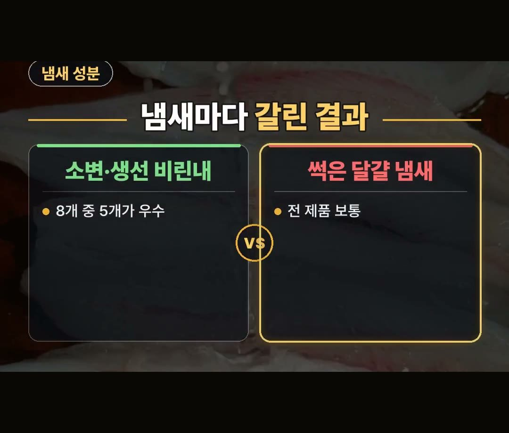
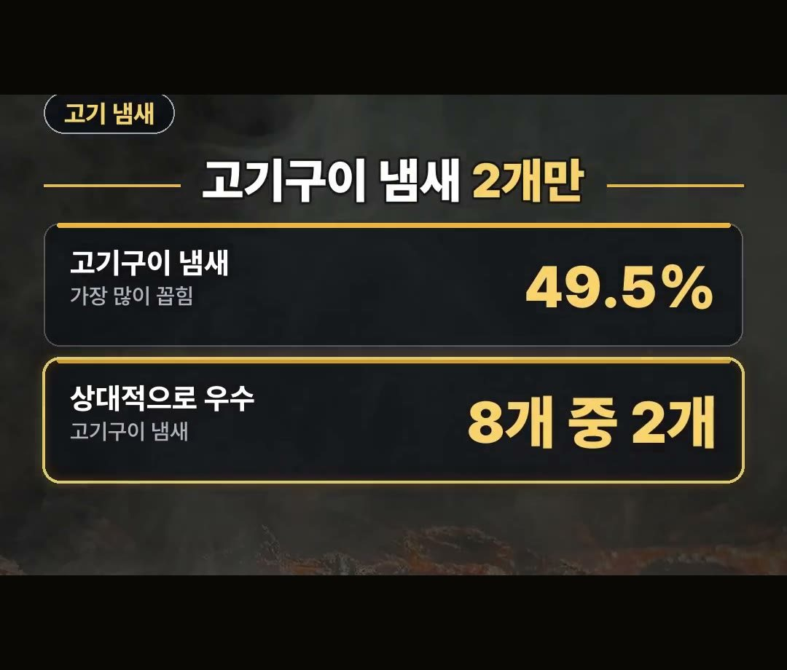
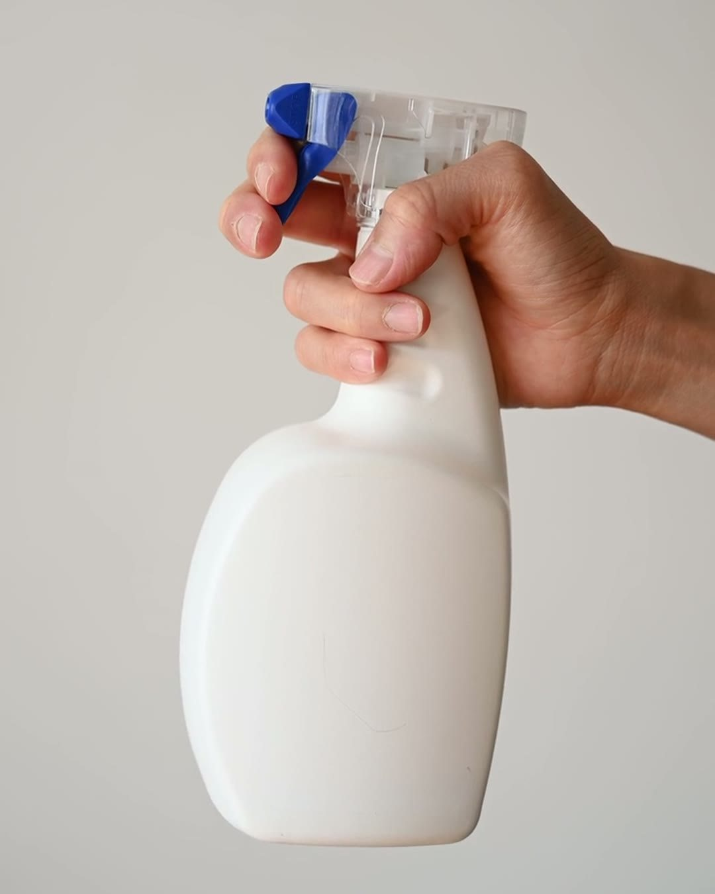
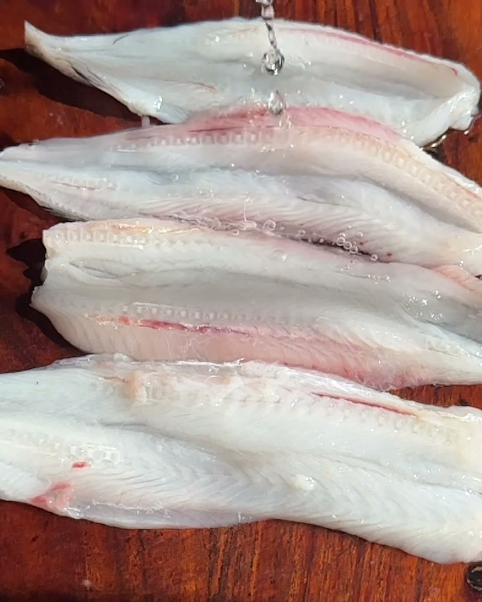

섬유탈취제 추천, 향만 보고 사면 후회하는 이유
※ 이 글에는 제휴 링크가 포함되어 있으며, 링크를 통해 구매하시면 일정 수수료를 받을 수 있습니다. (가격은 같습니다)
※ 이 포스팅은 쿠팡 파트너스 활동의 일환으로, 이에 따른 일정액의 수수료를 제공받습니다.
※ 이 콘텐츠는 토스쇼핑 쉐어링크 활동의 일환으로, 링크를 통한 구매가 발생하면 일정 수수료를 지급받습니다.
같은 100 mL인데 한쪽은 656원, 다른 쪽은 1,479원으로 최대 2.3배 차이 — 한국소비자원이 섬유탈취제 8개 제품을 시험했을 때의 시험 당시 값입니다.
값만 다른 게 아니라, 빼려는 냄새에 따라 결과도 갈렸어요.
향이 좋은 제품과 냄새를 잘 빼는 제품이 꼭 같지는 않다는 이야기예요.
이 글에서는 섬유탈취제 추천 글을 보기 전에 알아 두면 좋은 값 차이, 냄새별 결과, 살 때 견줄 점을 정리했어요.
한국소비자원 섬유탈취제 8개 제품 시험에서 100 mL당 값은 시험 당시 최대 2.3배 차이였어요.
소비자 설문에서 가장 많이 꼽힌 고기구이 냄새(49.5%)는 8개 중 2개만 상대적으로 우수했으니, 빼려는 냄새부터 정하고 고르세요! 👕
향만 좋으면 다 비슷할까요
섬유탈취제는 향만 좋으면 다 비슷하다고 생각하기 쉽죠.
그런데 한국소비자원이 섬유탈취제 8개 제품을 시험한 결과를 보면 달랐어요.
같은 양의 값도, 냄새 종류마다 나온 결과도 제품마다 차이가 있었습니다.
그래서 섬유탈취제 추천 글을 볼 때도 향 이름보다 어떤 냄새를 빼고 싶은지, 같은 양에 얼마인지를 먼저 보는 게 좋아요.
아래에서 시험 결과를 하나씩 살펴볼게요.

같은 양 값, 최대 2.3배 차이
먼저 값이에요.
한국소비자원 시험에서 같은 양(100 mL당) 값은 이렇게 나왔어요.
- 낮은 쪽 값: 656원
- 높은 쪽 값: 1,479원
- 차이: 최대 2.3배
모두 시험 당시 값이라 지금 파는 값과는 다를 수 있어요.
그래도 통 크기가 제각각인 만큼, 살 때는 통째 값보다 같은 양 값으로 견줘 보는 게 좋습니다.

냄새마다 갈린 결과
냄새 성분마다 결과도 달랐어요.
- 소변·생선 비린내 성분: 8개 중 5개가 우수
- 썩은 달걀 냄새: 전 제품 보통
같은 섬유탈취제라도 빼려는 냄새가 무엇이냐에 따라 결과가 달라질 수 있다는 뜻이에요.
집에서 주로 신경 쓰이는 냄새가 무엇인지부터 떠올려 보세요.

고기 냄새가 고민이라면
소비자 설문에서 빼고 싶은 음식 냄새로 가장 많이 꼽힌 건 고기구이 냄새였어요.
- 가장 많이 꼽힌 음식 냄새: 고기구이 (49.5%)
- 고기구이 냄새에 상대적으로 우수한 제품: 8개 중 2개
고기 굽는 일이 잦은 집이라면, 같은 시험에서도 이 냄새에 상대적으로 우수했던 제품은 8개 중 2개뿐이었다는 점을 기억해 두세요.


섬유탈취제 추천 전에 견줄 것과 주의할 점
살 땐 세 가지를 견줘 보세요.
고를 때 볼 점으로 정리하면 이렇습니다.
- 빼려는 냄새
- 같은 양 값
- 남는 향
그리고 꼭 기억할 주의점이 있어요.
탈취제는 사람이나 동물에 직접 뿌리지 마세요.
사람이나 반려동물에게 바로 뿌릴 생각이라면 섬유탈취제는 사지 않는 게 맞아요.
이런 제품도 있어요.
상품 설명에 따르면 코튼 향의 150밀리리터 섬유탈취제라고 합니다.
위 시험 결과는 이 제품을 시험한 것이 아니니, 견줄 점 세 가지를 상품 설명에서 하나씩 확인해 보세요.

정리
- 한국소비자원 섬유탈취제 8개 제품 시험에서 100 mL당 값은 시험 당시 656원~1,479원으로 최대 2.3배 차이였어요.
- 소변·생선 비린내 성분은 8개 중 5개가 우수, 썩은 달걀 냄새는 전 제품 보통이었고, 소비자 설문에서 가장 많이 꼽힌 고기구이 냄새(49.5%)는 8개 중 2개만 상대적으로 우수했어요.
- 빼려는 냄새·같은 양 값·남는 향을 견주고, 탈취제는 사람이나 동물에 직접 뿌리지 마세요.
여러분은 옷에 밴 냄새 가운데 어떤 냄새가 가장 고민이세요?
링크는 아래에 모아 두었어요.
📌 2026년 10월 기준 정보예요. 가격은 시기에 따라 달라질 수 있어요.
· 한국소비자원 소비자24 비교공감 제2026-14호 「섬유탈취제」
· 뉴스1 「섬유탈취제, 냄새 따라 탈취성능 제각각…가격 최대 2.3배 차이」
사진·영상사진·영상: Pexels (ARGA, Anastasia Shuraeva, HisArt Studios, KATRIN BOLOVTSOVA, Lara Jameson, Liliana Drew)